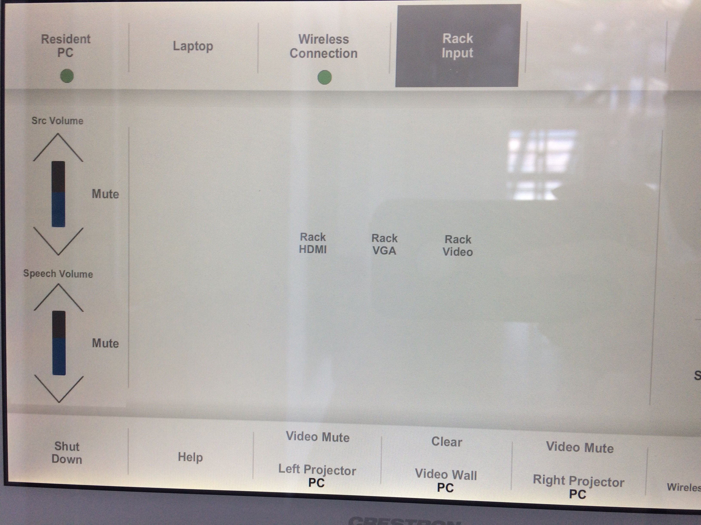

Lightbox Toolkit
Documentation on the Lightbox Gallery for collaborators and operators
Lightbox Crestron Panel
This touch panel, found in the Lightbox Gallery on the side nearer the elevators, controls the screens, projectors, and AV inputs in the Lightbox Gallery.
To turn on the panel, touch the "home" button.

Then tap the screen and enter the passcode.

The upper bar on the left side controls the volume of the sound coming out of the speakers. The lower bar controls the volume of the microphones. Note that these are connected to the PC associated with the screens.
If you want to change the input from the PC downstairs to the HDMI input behind the screens, change the selection under "Layout" (select "Rack HDMI"), make sure under "Rack Input" that "Rack HDMI" is selected, and tap "Video Wall" so that it reads "HDMI" instead of "PC". The HDMI port can be accessed from behind the leftmost middle screen.

Touch "Display Controls" to open a screen from which you can turn each of the screens and projectors on or off individually. You can also select "Mute Display" if you need the projection off briefly without shutting the projectors down.

Touch "Layouts" to open a screen from which you can choose different configurations of displays—for example, nine separate monitors, or one continuous monitor—tap one to select it.
Touch "Schedule" to open a screen from which you can adjust the schedule that turns the screens and projectors on and off. The days of the week can be scheduled separately, and more than one schedule can be stored. Stored schedules, and the schedule overall, can then be enabled or disabled individually.
The screen will logout automatically after about 30 seconds.